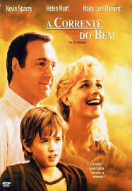
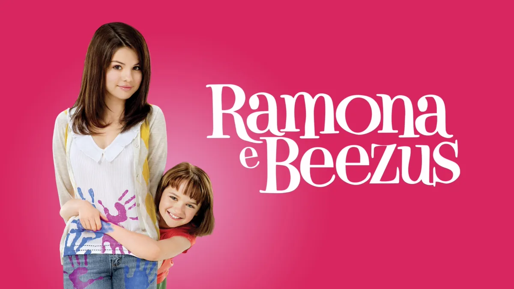
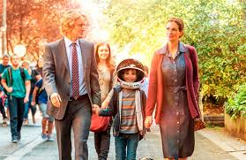

| Título do Filme |
Link |
Opinião |
Capa |
| Divertidamente 2 |
Assistir | ;
Filme retrata dirigido por Kelsey Mann, a obra retrata os dramas da adolescência de uma forma criativa e didática,
transformando as emoções em personagens e os processos psicológicos em ambientes dentro da mente da personagem
principal, a pequena Riley. |
 |
| A Corrente do Bem |
Assistir |
Filme retrata a história de um professor e de seus alunos no início do ano letivo. Eugene Simonet é professor de Estudos Sociais e durante suas aulas fez um desafio aos
alunos: deveriam desenvolver um trabalho com o objetivo de mudar o mundo. |
 |
| Ramona e Beezus |
Assistir |
Filme retrata Ramona (Joey King) está na terceira série do colégio e adora aprontar.Ela arruma encrenca com quase todos na escola e com os membros da família, inclusive sua irmã mais velha Beezus (Selena Gomez), que tem a
missão de cuidar dela, enquanto tenta se enturmar no primeiro ano do colegial. |
 |
| Extraordinário |
Assistir |
Filme retrata a história de um garoto, chamado August Pullman, que devido síndrome de Treacher Collins
teve que passar por diversas cirurgias plásticas que o deixou com deformidades em sua face. |
 |